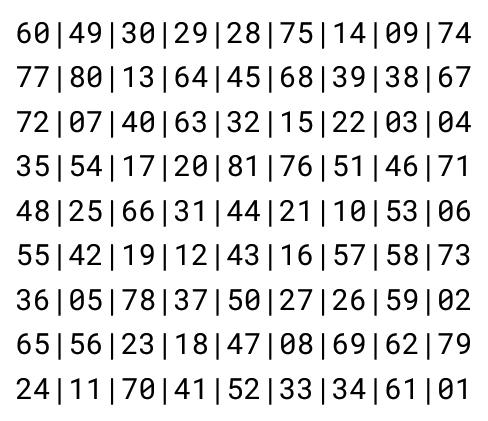

I have a broad collection of experiences, including creating websites, building &
hosting cybersecurity puzzles, writing software, and solving programming challenges.

Prime Grid Labeling
October 2024
Generation of an NxM matrix such that all orthogonal neighboars are coprime.
Prime Grid Labeling
Project Overview
Generation of an N x M matrix with values 1...N*M such that all
orthogonal neighbors are coprime.
Impetus
My goal as a lead contributor to the project was to implement the latest version with heuristic
optimization and an iterative stack to speed up the generation of prime grids, accomplishing
a 115x115 grid.
Skills & Technologies
Recursive & iterative stack-based backtracking
Collaborated using Github for version control
Used Node and Graph classes for object-oriented generations